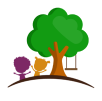

Skills
- Fine and visual motor skills,
including handwriting - Hand-eye coordination
- Postural control
- Bilateral coordination
- Praxis or motor planning
- Executive functioning
- Sensory integration
- Self-regulation
- Independence with activities of daily living,
such as sleeping, dressing, eating, - and using the bathroom

Who might benefit from occupational therapy at Kids N Fun Therapy? Children and teens who have…
- ADHD/ADD
- Autism spectrum disorder (ASD)
- Cerebral palsy
- Developmental coordination
- Developmental delay(s)
- Neuromuscular disorders, such
as muscular dystrophy (MD)
- Down syndrome
- Dyslexia or dysgraphia
- Self-rDyspraxiaegulation
- Hyper- or hypotonia
- Behavioral and/ or mental health
challenges, such as anxiety, depression
oppositional defiant disorder (ODD), conduct
disorder (CD)
Read More
Visit us
33 Lyman st suite 103 B, Westborough, MA 01581
Hours
Monday–Friday (10am–6pm)Phone
(774)-393-1849